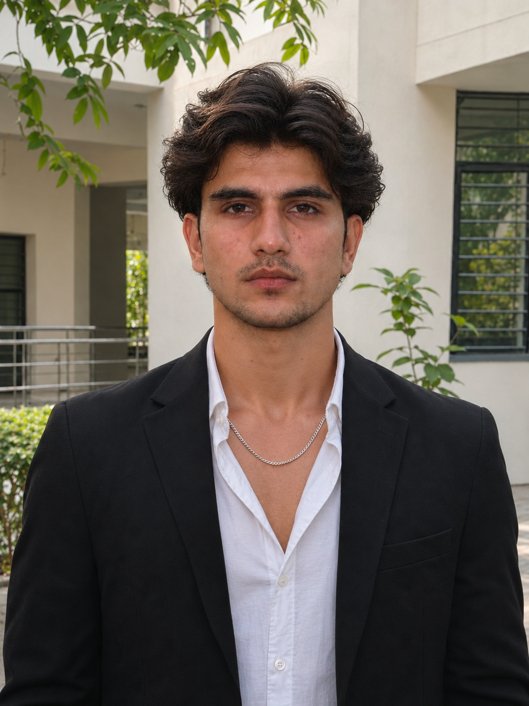

Indian Institute of Management Bangalore
BBA in Digital Business and Entrepreneurship
A personal introduction
I’m Madvendra, a student of business and economics. I’m interested in how organisations work and how people make everyday decisions.
Outside my studies, I enjoy badminton, basketball, running and swimming. Staying active is an important part of my routine.
A little more about me
I’m pursuing BBA DBE at IIM Bangalore alongside a BA in Economics at Vikrant University.
Studying both subjects gives me different ways to think about businesses, markets and the choices people make. I’m still exploring where these interests will take me.
I like having a balance between studying and being active. I’m also learning the basics of web development, and this website is part of that process.
BBA in Digital Business and Entrepreneurship
BA in Economics
Badminton and basketball are sports I enjoy playing with others. Running and swimming give me a different kind of challenge and a chance to work on my fitness.
I value regular practice and getting better over time.
I’m interested in the practical side of management: planning work, organising responsibilities and helping a group stay on track.
Balancing my studies with sport is also teaching me to manage my own time more carefully.I know currently,I do not fall in category of best but with time i will gradually improve and will become lot better than I am today .
For a conversation about coursework, student projects or shared interests, you can reach me by email.
madvendra.tomar26@iimb.ac.in